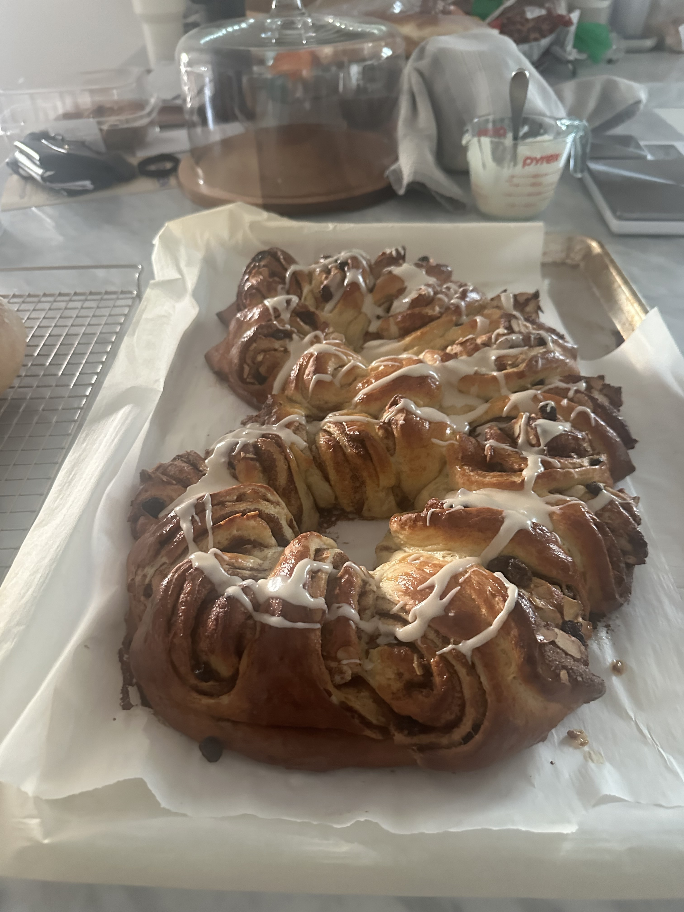

Kringle

Norwegian Kringle
750 gall-purpose flour100 gwhite sugar400 mlwhole milk2¼ tspinstant or active dry yeast2 tspcardamom1 tspsalt1egg1 tspvanilla extract125 gbutter at room temperature in cubes
Place everything except the butter in a stand mixer with the dough hook on low (speed 2 on KitchenAid) for 10 minutes.
Add the cubes of butter and let it run for another 10 minutes.
Set aside and cover with some plastic and a kitchen towel for 2 hours or more to rise until double in size.
Move to a large surface and add some oil/fat or flour on the surface before rolling out the dough into a rectangle (45cm wide and 90cm long).
100 graisins or chocolate bits80 gbutter, soft100 gwhite sugar1½-2 tbspcinnamon- Sliced almonds
1egg for brushing
Add the butter and spread it evenly over the dough. Add the raisins/chocolate, sugar and cinnamon (mix together in a bowl first), and almonds.
Roll the long side of the dough firmly together and place it on a baking sheet on parchment paper, shaped like a kringle.
Cut 2 cm long slices into the dough and switch between placing them back left and right.
Cover and let rise for another 1 hour or more, until double in size.
Brush with egg wash.
Preheat oven to 400 fahrenheit (200 celsius) and bake for 20-25 minutes (cover with foil if it browns to quickly).
Let the kringle cool, and then apply the melisglasur on top.
Enjoy!
You can freeze the kringle once it’s cool and reheat at 350 fahrenheit (175 celsius) for 3-4 minutes.